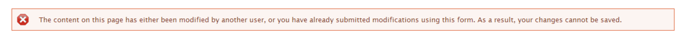

Legal Content CMS¶
Content types for legal content:
Content types for legal content:
Known Workarounds¶
Redirect “Service unavailable”¶
If you get a fast loading “service unavailable” message this is usually a redirect issue. (this is different than the “temporarily unavailable” message

To fix:
- Find the node that the url is supposed to be redirecting to
- In that node, there is probably a redirect that matches the path alias for that page (for example, for node 30691 has a path alias of https://www.illinoislegalaid.org/legal-information/divorce; if it has a redirect from https://www.illinoislegalaid.org/legal-information/divorce to https://www.illinoislegalaid.org/legal-information/divorce or to /node/30691 this will create an endless loog)
- Edit the redirect. You will probably get a message that an infinte loop will be created
- Delete the redirect
- Test the original url that had the error; it should work now
Node form is outdated or modified by someone else¶
This bug happens when a staff or intern leaves content in draft or ready to review mode and then someone tried to edit that node, an error
To resolve:
- First, check that you don’t have multiple edit windows open. If you do, close them, and reload the edit form
- If it still persists, check that no one else has the page open for editing
- If that still doesn’t resolve it, check that the current publish status is draft/revise or ready to review. The only known workaround for this:
- View the latest version
- That page has a drop down to change the state
- Set the state to published
- You should be able to edit and save the node now
Note
This is a known bug that we are working on getting fixed.
See also: